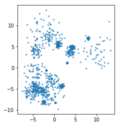

Clustering and Mixture Models¶
import numpy as np
import matplotlib.pyplot as plt
% matplotlib inline
plt.rcParams["savefig.dpi"] = 300
plt.rcParams["savefig.bbox"] = "tight"
np.set_printoptions(precision=3, suppress=True)
import pandas as pd
from sklearn.model_selection import train_test_split, cross_val_score
from sklearn.pipeline import make_pipeline
from sklearn.preprocessing import scale, StandardScaler
from matplotlib import colors
# with this color norm we can do discrete scatter sensibly
# norm = colors.BoundaryNorm(boundaries=np.arange(11), ncolors=10)
def scatter_tab(x, y, c, ax=None, **kwargs):
if ax is None:
ax = plt.gca()
ax.scatter(x, y, c=plt.cm.tab10(c), **kwargs)
from sklearn.datasets import make_blobs
from sklearn.cluster import KMeans
X, y = make_blobs(centers=4, random_state=1)
km = KMeans(n_clusters=5, random_state=0)
km.fit(X)
print(km.cluster_centers_.shape)
print(km.labels_.shape)
# predict is the same as labels_ on training data
# but can be applied to new data
print(km.predict(X).shape)
scatter_tab(X[:, 0], X[:, 1], c=km.labels_)
plt.gca().set_aspect("equal")
plt.xticks(())
plt.yticks(())
plt.savefig("images/kmeans_api.png")
(5, 2)
(100,)
(100,)

rng = np.random.RandomState(42)
X, y = make_blobs(n_samples=500, centers=10, random_state=rng, cluster_std=[rng.gamma(1) for i in range(10)])
plt.scatter(X[:, 0], X[:, 1], s=5, alpha=.6)
plt.gca().set_aspect("equal")
#plt.scatter(X[:, 0], X[:, 1], c=plt.cm.Vega10(y), s=5, alpha=.6)
xlim = plt.xlim()
ylim = plt.ylim()

km = KMeans(n_clusters=5)
km.fit(X)
xs = np.linspace(xlim[0], xlim[1], 1000)
ys = np.linspace(ylim[0], ylim[1], 1000)
xx, yy = np.meshgrid(xs, ys)
pred = km.predict(np.c_[xx.ravel(), yy.ravel()])
plt.xlim(xlim)
plt.ylim(ylim)
plt.contourf(xx, yy, pred.reshape(xx.shape), alpha=.2, cmap='Accent')
plt.contour(xx, yy, pred.reshape(xx.shape), colors='k')
plt.scatter(X[:, 0], X[:, 1], s=8, alpha=.6, c=km.labels_, cmap='Accent')
centers = km.cluster_centers_
plt.scatter(centers[:, 0], centers[:, 1], s=55, cmap='Accent', marker="^", c=range(km.n_clusters), edgecolor='k')
plt.gca().set_aspect("equal")
plt.xticks(())
plt.yticks(())
plt.savefig("images/cluster_shapes_2.png")

rng = np.random.RandomState(3)
X, y = make_blobs(n_samples=1000, centers=20, random_state=rng, cluster_std=[rng.gamma(1) for i in range(20)])
plt.scatter(X[:, 0], X[:, 1], s=5, alpha=.6)
plt.gca().set_aspect("equal")
#plt.scatter(X[:, 0], X[:, 1], c=plt.cm.Vega10(y), s=5, alpha=.6)
xlim = plt.xlim()
ylim = plt.ylim()

km = KMeans(n_clusters=15)
km.fit(X)
xs = np.linspace(xlim[0], xlim[1], 1000)
ys = np.linspace(ylim[0], ylim[1], 1000)
xx, yy = np.meshgrid(xs, ys)
pred = km.predict(np.c_[xx.ravel(), yy.ravel()])
plt.xlim(xlim)
plt.ylim(ylim)
plt.contourf(xx, yy, pred.reshape(xx.shape), alpha=.2, cmap='Accent', levels=np.arange(15 + 1))
plt.contour(xx, yy, pred.reshape(xx.shape), colors='k', levels=np.arange(15 + 1))
plt.scatter(X[:, 0], X[:, 1], s=8, alpha=.6, c=km.labels_, cmap='Accent')
centers = km.cluster_centers_
plt.scatter(centers[:, 0], centers[:, 1], s=55, cmap='Accent', marker="^", c=range(km.n_clusters), edgecolor='k')
plt.gca().set_aspect("equal")
plt.xticks(())
plt.yticks(())
plt.savefig("images/cluster_shapes_1.png")

Agglomerative Clustering¶
from sklearn.cluster import AgglomerativeClustering
from sklearn.metrics import adjusted_rand_score
import itertools
ari_min = 3
# find a random state that makes them most dissimilar ... just for illustration
for i in range(1000):
labels = []
for linkage in ["complete", "average", 'ward']:
agg = AgglomerativeClustering(n_clusters=5, linkage=linkage)
rng = np.random.RandomState(i)
X, y = make_blobs(n_samples=100, centers=10, random_state=rng, cluster_std=[rng.gamma(2) for i in range(10)])
labels.append(agg.fit_predict(X))
ari = 0
for j, k in itertools.combinations(labels, 2):
ari += adjusted_rand_score(j, k)
if ari_min > ari:
ari_min = ari
print(i, ari)
0 1.0085065985512043
7 0.999090616692345
85 0.818683326528442
325 0.7794265903808125
484 0.5518711454498323
rng = np.random.RandomState(325)
X, y = make_blobs(n_samples=100, centers=10, random_state=rng, cluster_std=[rng.gamma(2) for i in range(10)])
plt.scatter(X[:, 0], X[:, 1], s=5, alpha=.6)
plt.gca().set_aspect("equal")
#plt.scatter(X[:, 0], X[:, 1], c=plt.cm.Vega10(y), s=5, alpha=.6)
xlim = plt.xlim()
ylim = plt.ylim()

from sklearn.cluster import AgglomerativeClustering
fig, axes = plt.subplots(1, 4, figsize=(8, 3), subplot_kw={"xticks":(), "yticks": ()})
for ax, linkage in zip(axes, ['single', "average", "complete", 'ward']):
agg = AgglomerativeClustering(n_clusters=5, linkage=linkage)
agg.fit(X)
ax.scatter(X[:, 0], X[:, 1], c=plt.cm.tab10(agg.labels_), alpha=.7)
ax.set_title(linkage)
ax.set_aspect("equal")
print("{} : {}".format(linkage, np.sort(np.bincount(agg.labels_))[::-1]))
plt.savefig("images/merging_criteria.png")
single : [96 1 1 1 1]
average : [82 9 7 1 1]
complete : [50 24 14 11 1]
ward : [31 30 20 10 9]

DBSCAN¶
from sklearn.cluster import DBSCAN
min_samples = 4
eps = 2.5
plt.figure(figsize=(4, 5))
dbscan = DBSCAN(min_samples=min_samples, eps=eps)
colors = ['r', 'g', 'b', 'k', 'cyan']
markers = ['o', '^', 'v']
# get cluster assignments
clusters = dbscan.fit_predict(X)
print("min_samples: %d eps: %f cluster: %s"
% (min_samples, eps, clusters))
if np.any(clusters == -1):
c = ['w'] + colors
clusters = clusters + 1
else:
c = colors
m = markers
c = np.array(c)
plt.scatter(X[:, 0], X[:, 1], c=c[clusters], s=10, edgecolor="k")
inds = dbscan.core_sample_indices_
# vizualize core samples and clusters.
if len(inds):
plt.scatter(X[inds, 0], X[inds, 1], c=c[clusters[inds]],
s=30, edgecolor="k")
plt.title("min_samples: %d eps: %.1f"
% (min_samples, eps))
plt.xticks(())
plt.yticks(())
plt.savefig("images/dbscan_algo.png")
min_samples: 4 eps: 2.500000 cluster: [-1 -1 0 0 0 0 0 1 -1 2 0 0 0 2 0 1 0 0 2 2 3 0 0 2
0 -1 0 -1 -1 0 2 2 0 -1 0 4 0 2 2 0 2 2 -1 0 -1 4 3 2
0 0 -1 0 0 0 0 0 0 0 0 -1 0 -1 -1 0 3 1 4 -1 -1 2 2 3
-1 2 0 0 -1 0 -1 -1 3 -1 2 -1 0 4 0 0 -1 0 1 -1 2 0 0 2
-1 0 -1 0]

rng = np.random.RandomState(3)
X, y = make_blobs(n_samples=500, centers=10, random_state=rng, cluster_std=[rng.gamma(1.5) for i in range(10)])
plt.scatter(X[:, 0], X[:, 1], s=5, alpha=.6)
plt.gca().set_aspect("equal")
#plt.scatter(X[:, 0], X[:, 1], c=plt.cm.Vega10(y), s=5, alpha=.6)
xlim = plt.xlim()
ylim = plt.ylim()
plt.xticks(())
plt.yticks(())
plt.savefig("images/mm_examples_1.png")

from sklearn.mixture import GaussianMixture
gmm = GaussianMixture(n_components=3)
gmm.fit(X)
print(gmm.means_)
print(gmm.covariances_)
[[-2.286 -4.674]
[ 8.685 5.206]
[-0.377 6.947]]
[[[ 6.651 2.066]
[ 2.066 13.759]]
[[ 1.481 -1.1 ]
[-1.1 4.191]]
[[ 5.467 -3.341]
[-3.341 4.666]]]
assignment = gmm.predict(X)
plt.scatter(X[:, 0], X[:, 1], s=5, alpha=.6, c=plt.cm.tab10(assignment))
plt.gca().set_aspect("equal")
plt.xticks(())
plt.yticks(())
plt.savefig("images/mm_examples_2.png")

# log probability under the model
print(gmm.score(X))
print(gmm.score_samples(X).shape)
-5.508383131660925
(500,)
xs = np.linspace(xlim[0], xlim[1], 1000)
ys = np.linspace(ylim[0], ylim[1], 1000)
xx, yy = np.meshgrid(xs, ys)
pred = gmm.predict_proba(np.c_[xx.ravel(), yy.ravel()])
plt.scatter(X[:, 0], X[:, 1], s=5, alpha=.6, c=plt.cm.tab10(assignment))
plt.gca().set_aspect("equal")
plt.xticks(())
plt.yticks(())
levels = [.9, .99, .999, 1]
for color, component in zip(range(3), pred.T):
plt.contour(xx, yy, component.reshape(xx.shape), colors=[plt.cm.tab10(color)], levels=levels)
plt.savefig("images/prob_est1.png")

scores = gmm.score_samples(np.c_[xx.ravel(), yy.ravel()])
plt.scatter(X[:, 0], X[:, 1], s=5, alpha=.6, c=plt.cm.tab10(assignment))
plt.gca().set_aspect("equal")
plt.xticks(())
plt.yticks(())
scores = np.exp(scores)
plt.contour(xx, yy, scores.reshape(xx.shape), levels=np.percentile(scores, np.linspace(0, 100, 8))[1:-1])
plt.savefig("images/prob_est2.png")

rnd = np.random.RandomState(4)
X1 = rnd.normal(size=(50, 2)) + rnd.normal(scale=10, size=(1, 2))
X2 = rnd.normal(scale=(1, 5), size=(50, 2)) + rnd.normal(scale=(10, 1), size=(1, 2))
X3 = np.dot(rnd.normal(scale=(1, 2), size=(50, 2)), [[1, -1], [1, 1]]) + rnd.normal(scale=(10, 1), size=(1, 2))
plt.plot(X1[:, 0], X1[:, 1], 'o', label='x1')
plt.plot(X2[:, 0], X2[:, 1], 'o', label='x2')
plt.plot(X3[:, 0], X3[:, 1], 'o', label='x3')
plt.gca().set_aspect("equal")
plt.legend()
<matplotlib.legend.Legend at 0x7f43a0918828>

import matplotlib.pyplot as plt
import matplotlib as mpl
import numpy as np
from sklearn.mixture import GaussianMixture
def make_ellipses(gmm, ax):
for n in range(gmm.n_components):
if gmm.covariance_type == 'full':
covariances = gmm.covariances_[n]
elif gmm.covariance_type == 'tied':
covariances = gmm.covariances_
elif gmm.covariance_type == 'diag':
covariances = np.diag(gmm.covariances_[n])
elif gmm.covariance_type == 'spherical':
covariances = np.eye(gmm.means_.shape[1]) * gmm.covariances_[n]
v, w = np.linalg.eigh(covariances)
u = w[0] / np.linalg.norm(w[0])
angle = np.arctan2(u[1], u[0])
angle = 180 * angle / np.pi # convert to degrees
v = 2. * np.sqrt(2.) * np.sqrt(v)
ell = mpl.patches.Ellipse(gmm.means_[n], v[0], v[1],
180 + angle, color=plt.cm.tab10(n))
ell.set_clip_box(ax.bbox)
ell.set_alpha(0.5)
ax.add_artist(ell)
rnd = np.random.RandomState(4)
X1 = rnd.normal(size=(50, 2)) + rnd.normal(scale=10, size=(1, 2))
X2 = rnd.normal(scale=(1, 5), size=(50, 2)) + rnd.normal(scale=(10, 1), size=(1, 2))
X3 = np.dot(rnd.normal(scale=(1, 2), size=(50, 2)), [[1, -1], [1, 1]]) + rnd.normal(scale=(10, 1), size=(1, 2))
X = np.vstack([X1, X2, X3])
# Try GMMs using different types of covariances.
estimators = [GaussianMixture(n_components=3, covariance_type=cov_type, max_iter=20, random_state=0)
for cov_type in ['spherical', 'diag', 'tied', 'full']]
n_estimators = len(estimators)
fig, axes = plt.subplots(1, 4, figsize=(15, 5))
titles = ("spherical\nn_components", "diag\nn_features * n_components",
"tied\n~n_features ** 2", "full\n~n_components * n_features ** 2")
for ax, title, estimator in zip(axes, titles, estimators):
estimator.fit(X)
make_ellipses(estimator, ax)
pred = estimator.predict(X)
ax.scatter(X[:, 0], X[:, 1], c=plt.cm.tab10(pred))
ax.set_xticks(())
ax.set_yticks(())
ax.set_title(title)
ax.set_aspect("equal")
plt.savefig("images/covariance_types.png")

GMM vs KMeans¶
n_samples = 500
blobs = make_blobs(n_samples=n_samples, random_state=8)
# Anisotropicly distributed data
random_state = 170
X, y = make_blobs(n_samples=n_samples, random_state=random_state)
transformation = [[0.6, -0.6], [-0.4, 0.8]]
X_aniso = np.dot(X, transformation)
aniso = (X_aniso, y)
# blobs with varied variances
varied = make_blobs(n_samples=n_samples,
cluster_std=[1.0, 2.5, 0.5],
random_state=random_state)
fig, axes = plt.subplots(1, 2, figsize=(6, 3))
for ax, model in zip(axes, [GaussianMixture(n_components=3), KMeans(n_clusters=3)]):
model.fit(X_aniso)
ax.scatter(X_aniso[:, 0], X_aniso[:, 1], c=plt.cm.tab10(model.predict(X_aniso)), alpha=.6)
ax.set_xticks(())
ax.set_yticks(())
ax.set_title(type(model).__name__)
plt.savefig("images/gmm_vs_kmeans_1.png")

X_varied = varied[0]
fig, axes = plt.subplots(1, 2, figsize=(6, 3))
for ax, model in zip(axes, [GaussianMixture(n_components=3), KMeans(n_clusters=3)]):
model.fit(X_varied)
ax.scatter(X_varied[:, 0], X_varied[:, 1], c=plt.cm.tab10(model.predict(X_varied)), alpha=.6)
ax.set_xticks(())
ax.set_yticks(())
ax.set_title(type(model).__name__)
plt.savefig("images/gmm_vs_kmeans_2.png")

from scipy import stats
line = np.linspace(-8, 6, 200)
norm1 = stats.norm(0, 1)
norm2 = stats.norm(3, 2)
norm3 = stats.norm(-3.4, .5)
fig, axes = plt.subplots(3, subplot_kw={'xticks': (), 'yticks': ()})
axes[0].plot(line, norm1.pdf(line))
axes[1].plot(line, norm2.pdf(line))
axes[2].plot(line, norm3.pdf(line))
plt.savefig("images/gmm1.png")

plt.figure(figsize=(6, 2))
plt.plot(line, .5 * norm1.pdf(line) + .3 * norm2.pdf(line) + .2 * norm3.pdf(line))
plt.xticks(())
plt.yticks(())
plt.savefig("images/gmm2.png")

rng = np.random.RandomState(1)
X, y = make_blobs(n_samples=500, centers=10, random_state=rng, cluster_std=[rng.gamma(1.5) for i in range(10)])
plt.scatter(X[:, 0], X[:, 1], s=5, alpha=.6)
plt.gca().set_aspect("equal")
#plt.scatter(X[:, 0], X[:, 1], c=plt.cm.Vega10(y), s=5, alpha=.6)
xlim = plt.xlim()
ylim = plt.ylim()

from sklearn.mixture import BayesianGaussianMixture
from sklearn.metrics import adjusted_rand_score
rng = np.random.RandomState(1)
X, y = make_blobs(n_samples=5000, centers=10, random_state=rng, cluster_std=[rng.gamma(1.5) for i in range(10)])
fig, axes = plt.subplots(2, 4, figsize=(10, 5))
gammas = np.logspace(-10, 10, 4)
for gamma, ax in zip(gammas, axes.T):
print(gamma)
bgmm = BayesianGaussianMixture(n_components=20, weight_concentration_prior=gamma, random_state=1).fit(X)
ax[0].scatter(X[:, 0], X[:, 1], s=5, alpha=.6, c=plt.cm.tab10(bgmm.predict(X)))
print(np.bincount(bgmm.predict(X)))
print(adjusted_rand_score(y, bgmm.predict(X)))
ax[0].set_title("gamma={:.0e}".format(gamma))
ax[1].bar(range(20), bgmm.weights_)
plt.tight_layout()
1e-10
/home/andy/checkout/scikit-learn/sklearn/mixture/base.py:265: ConvergenceWarning: Initialization 1 did not converge. Try different init parameters, or increase max_iter, tol or check for degenerate data. % (init + 1), ConvergenceWarning)
[ 647 503 44 454 518 1042 458 517 0 0 277 74 0 15
159 0 292]
0.7096662658394226
0.0004641588833612782
/home/andy/checkout/scikit-learn/sklearn/mixture/base.py:265: ConvergenceWarning: Initialization 1 did not converge. Try different init parameters, or increase max_iter, tol or check for degenerate data. % (init + 1), ConvergenceWarning)
[ 647 503 44 454 518 1042 458 517 0 0 277 74 0 15
159 0 292]
0.7096662658394226
2154.4346900318865
/home/andy/checkout/scikit-learn/sklearn/mixture/base.py:265: ConvergenceWarning: Initialization 1 did not converge. Try different init parameters, or increase max_iter, tol or check for degenerate data. % (init + 1), ConvergenceWarning)
[ 646 503 27 306 518 1041 483 517 0 0 0 62 0 0
35 0 443 154 265]
0.6996760223489021
10000000000.0
/home/andy/checkout/scikit-learn/sklearn/mixture/base.py:265: ConvergenceWarning: Initialization 1 did not converge. Try different init parameters, or increase max_iter, tol or check for degenerate data. % (init + 1), ConvergenceWarning)
[ 644 503 19 233 518 1040 494 516 0 0 0 53 0 0
31 0 460 220 269]
0.6996790637679039